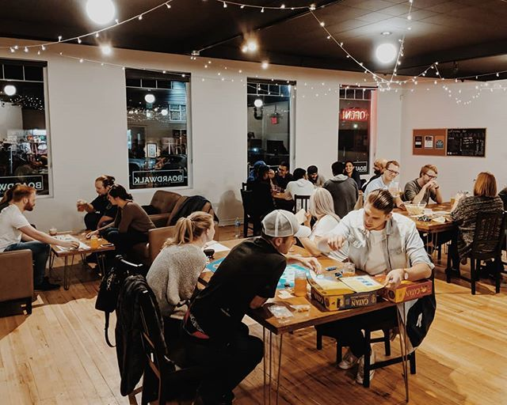
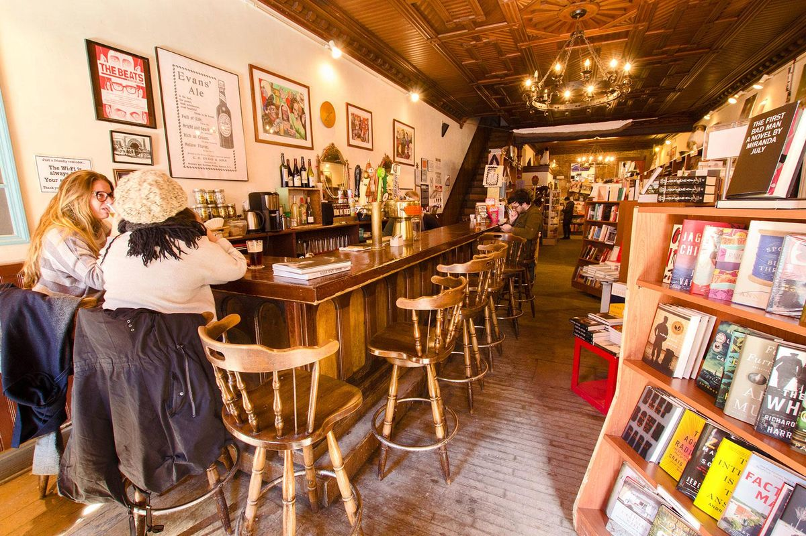
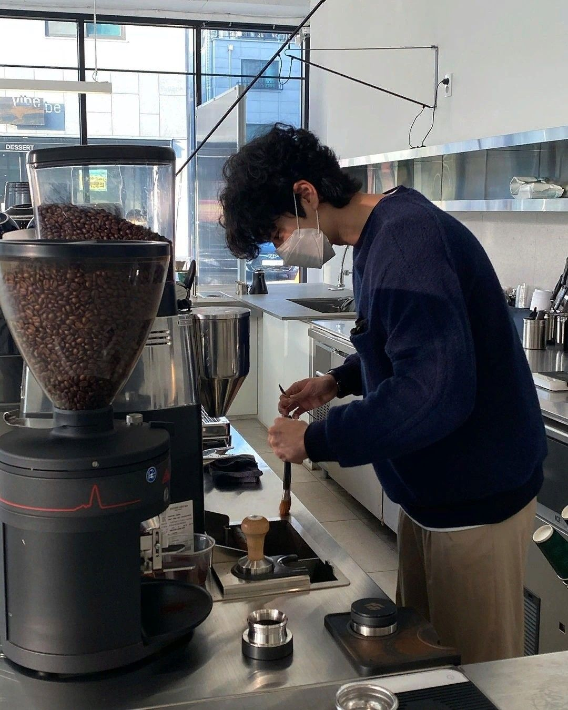
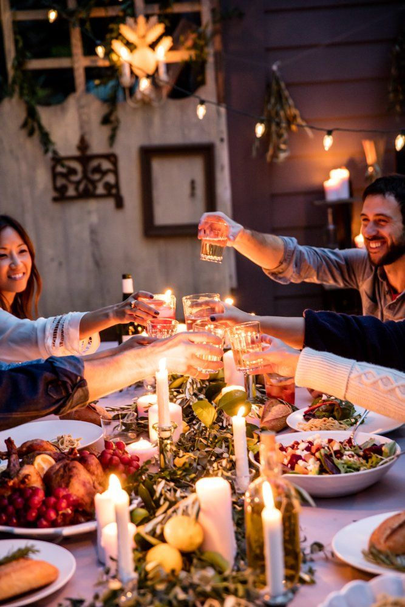
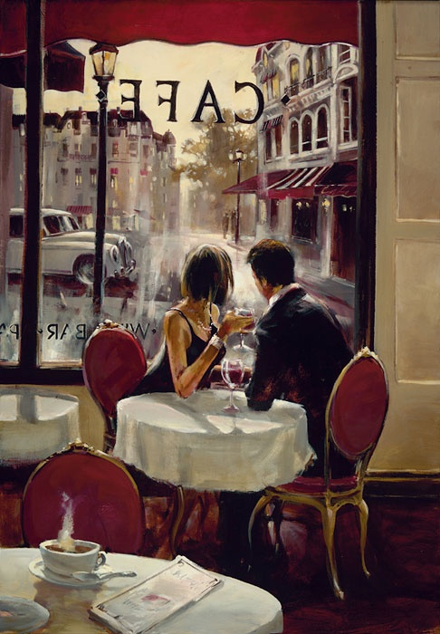
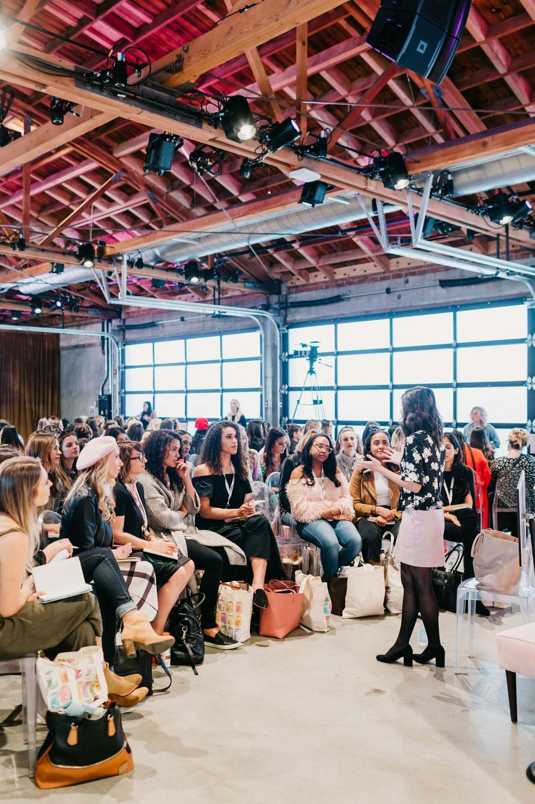
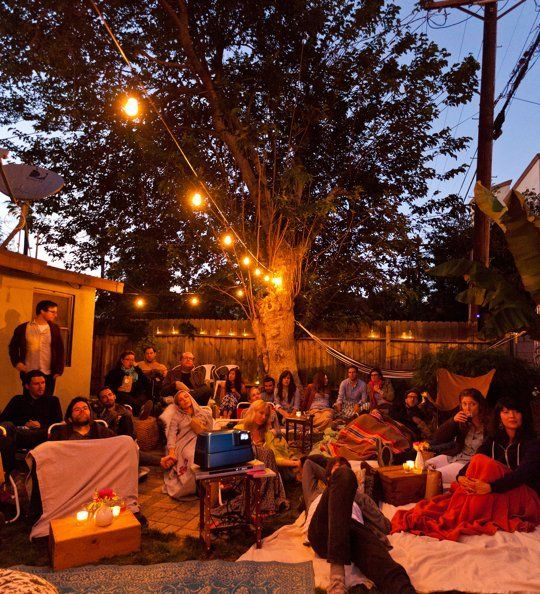
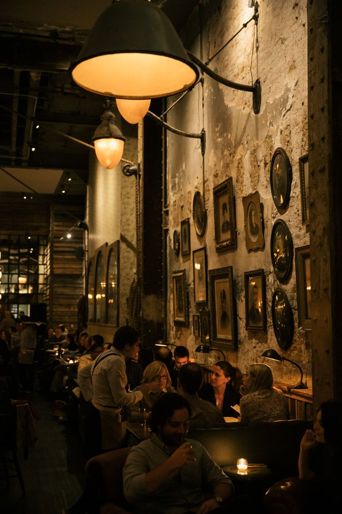
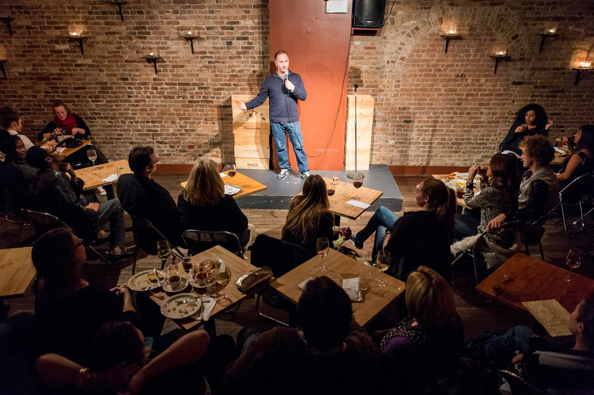

OUR EVENTS
1. Board Game Night
Imagine a cozy evening at a charming cafe, surrounded by friends, warm lighting, and the aroma of freshly brewed coffee. The tables are filled with an assortment of board games, each one promising a unique adventure. The atmosphere is relaxed, with soft background music and the gentle hum of conversation. As the night unfolds, you engage in thrilling competitions, strategic teamwork, and laughter-filled moments. The cafe's warm ambiance fosters a sense of community, making it easy to connect with fellow gamers. Whether you're a seasoned gamer or just looking for a new experience, Board Game Night at the cafe is an excellent way to unwind, socialize, and have fun!.
2. Music Night

Envision a captivating evening at a cozy cafe, where the air is filled with the sweet sounds of live music, warm lighting, and the aroma of freshly brewed coffee. The atmosphere is intimate, with soft background hum and gentle chatter, as patrons gather to enjoy the melodic performances.As the night unfolds, you're treated to soulful voices, skillful instrumentals, and heartfelt performances. The cafe's cozy setting fosters a sense of connection, making it easy to tap into the emotions and energy of the music. Whether you're a music lover, seeking a relaxing evening, or looking for inspiration, Music Night at the cafe is an unforgettable experience!
3. Bookfair
Imagine a magical evening at a charming cafe, transformed into a book lover's paradise. The atmosphere is cozy, with soft lighting, comfortable seating, and the aroma of freshly brewed coffee. The tables are filled with stacks of books, and the shelves are lined with even more, creating a bibliophile's dream. As the night unfolds, you're surrounded by fellow book enthusiasts, engaging in lively discussions, and discovering new titles and authors. The cafe's warm ambiance fosters a sense of community, making it easy to connect with like-minded people. Whether you're a bookworm, a writer, or simply looking for a unique experience, Bookfair Night at the cafe is a must-visit event!
4. Latte Art Competition
A latte art competition night at a cafe is an exciting event where baristas gather to showcase their skills in creating intricate designs on the surface of espresso drinks. Here's a vivid description: "The cafe buzzes with anticipation as the lights dim and the crowd quiets. The air is thick with the aroma of freshly brewed coffee and the soft hum of espresso machines. Baristas, each with their own unique style and flair, stand poised behind the counter, steam wands at the ready. The competition is about to begin. One by one, the baristas take their turn, expertly pouring steamed milk into delicate designs on the surface of the espresso shots. Hearts, leaves, and intricate patterns emerge, each one a testament to the artist's skill and creativity. The crowd oohs and ahhs with each new creation, cheering on their favorite designs. Judges, seasoned coffee experts, carefully evaluate each entry, scoring on technique, creativity, and overall aesthetic appeal. The tension builds as the competition narrows, and the final round begins. In the end, only one barista can be crowned the champion, but the real winners are the attendees, who get to witness the artistry and passion of these skilled coffee craftsmen. The night concludes with a sense of community and a newfound appreciation for the art of latte art."
5. New Years' Eve Parties
"The cafe transforms into a vibrant party hub as the clock strikes 9 PM on December 31st. Twinkling lights and colorful decorations adorn the walls, setting the tone for a night of revelry. The air is electric with excitement as friends and strangers gather to bid farewell to the old year and welcome the new one. The soundtrack switches to upbeat party anthems, and the dance floor beckons. Party hats and noisemakers appear, adding to the festive atmosphere. The aroma of specialty coffee drinks and appetizers wafts through the air, enticing partygoers to indulge in the cafe's special NYE menu. As the countdown begins, the crowd gathers around the TV screens and watches in unison, cheering and chanting as the final seconds of the year tick away. Confetti and balloons explode in a riot of color as the clock strikes midnight, and strangers become friends in the spirit of celebration. The night wears on, with toasts, laughter, and memories to last a lifetime. The cafe's warm and cozy atmosphere makes it the perfect spot to ring in the new year, surrounded by good company, great food, and exceptional coffee. As the evening winds down, partygoers depart with smiles, already looking forward to next year's celebration."
6. Cozy Love Night
"The cafe is bathed in a warm, golden glow as the sun sets outside, casting a romantic ambiance over the intimate gathering. Soft, velvety music plays in the background, setting the tone for a night of love and connection. Couples snuggle into plush armchairs, hands entwined, as they gaze into each other's eyes. The aroma of rich, decadent chocolate and freshly brewed coffee fills the air, teasing the senses and heightening the sense of romance. Flickering candles on each table cast a warm, flattering light on the faces of the loved ones, making every moment feel like a tender, unforgettable memory. The gentle hum of quiet conversations and soft laughter creates a sense of togetherness, as if the whole world has melted away, leaving only the two of them."
7. Charity Events
"The cafe is filled with warmth and generosity as the community comes together for a special charity event. The atmosphere is lively and supportive, with a sense of purpose and compassion in the air. Colorful posters and banners adorn the walls, highlighting the cause and the impact of the donations. Volunteers bustle about, setting up tables and displays, while the aroma of freshly baked goods and specialty coffee drinks wafts through the air, enticing attendees to indulge and give. A local musician strums a soulful melody on their guitar, adding to the emotional resonance of the event. The cafe's owners and staff are beaming with pride, having transformed their cozy space into a hub of philanthropy."
8. singles Night
"The cafe is electric with excitement as singles gather, hoping to meet that special someone. The atmosphere is lively and relaxed, with a hint of nervous anticipation. Soft music plays in the background, setting the tone for a night of connection and possibility. The aroma of freshly brewed coffee and sweet treats fills the air, putting everyone at ease. Comfortable seating areas invite conversation, and icebreaker games help to get the ball rolling. The cafe's staff are warm and welcoming, ensuring everyone feels included and at ease."
9. Theme Night
"The cafe is transformed into a vibrant and immersive world, as a theme night takes over the space. The atmosphere is electric, with decorations, music, and attire all aligning with the chosen theme. Tonight, it's a tropical island getaway, complete with colorful tiki torches, floral arrangements, and surfboard-inspired tables. The air is filled with the sweet scent of coconut and citrus, transporting customers to a Hawaiian paradise. Staff and patrons alike don their best Hawaiian shirts, flower garlands, and beachy vibes, adding to the festive atmosphere. Specialty drinks, like the "Coconut Coast" and "Surfer's Sunrise," are crafted with tropical flavors and garnishes, while the menu features island-inspired eats like poke bowls and huli huli chicken."
10. Stand-Up Comedy Night
"The cafe is abuzz with anticipation as the spotlight shines bright on the stage. The air is electric with laughter and excitement, as the audience eagerly awaits the night's lineup of hilarious comedians. The aroma of freshly brewed coffee and sweet treats fills the air, fueling the crowd's energy and wit. The intimate setting of the cafe creates a sense of connection between the performers and the audience, making every joke feel like a shared secret. The emcee takes the stage, warming up the crowd with clever banter and witty one-liners. Then, the first comedian steps up, launching into a set that leaves the audience in stitches. Each performer brings their unique style and humor, tackling topics from everyday life to absurd observations."